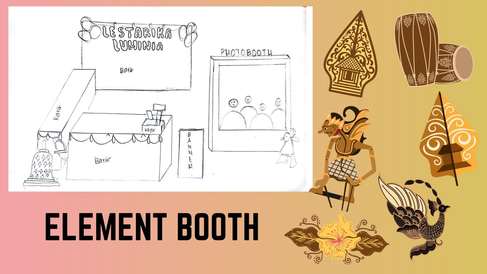
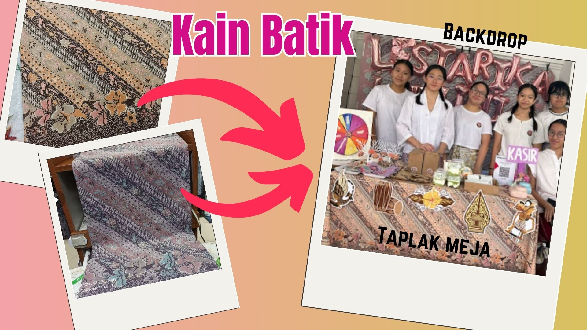
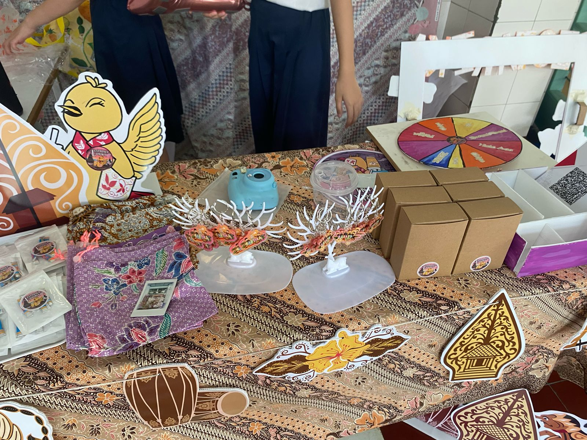
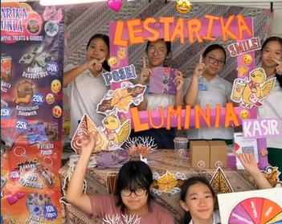
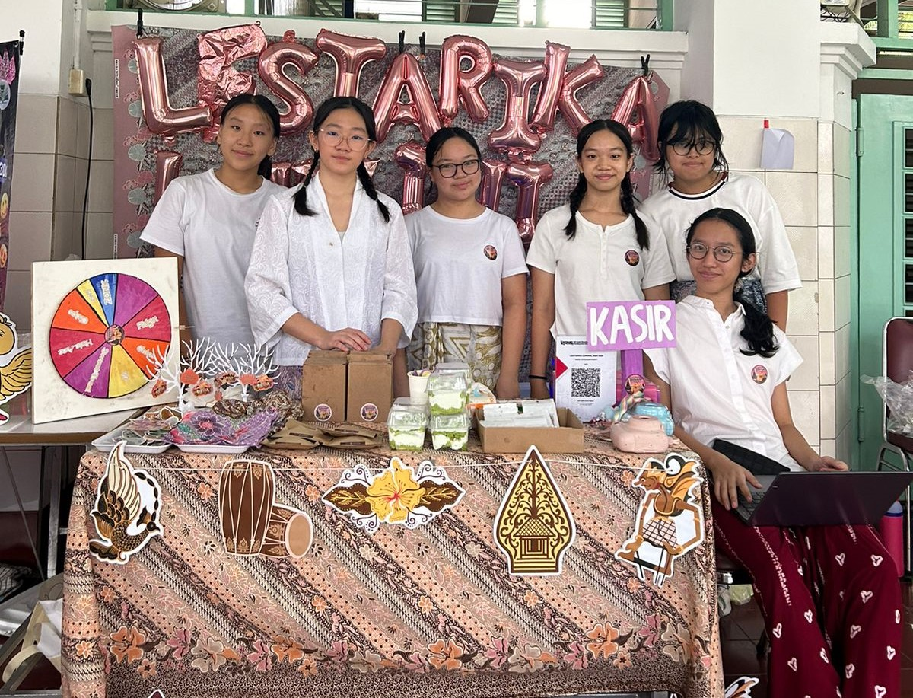

Rencana Booth
Membangun sebuah toko, tidak hanya memerlukan perencanaan produksi dan promosi. Namun, penampilan dan
keindahan toko juga sangat penting untuk menarik para pembeli-pembeli. Toko yang memiliki dekorasi
booth
yang menarik dan mencolok, dapat menarik lebih banyak pembeli untuk membeli produk-produk yang
dijualkan. Selain menarik para pembeli, dekorasi booth juga sangat penting agar pelaksanaan
penjualan
berjalan dengan terstruktur dan rapi. Agar kami para penjual tidak bingung dalam mempersiapkan
produk-produk dan melayani para pembeli.
Sekolah memberikan kami 2 meja yang berukuran 120 x 60 cm, dan daerah booth kelompok kami berada
di
selasar Lapangan Lourdes. Kami ingin memaksimalkan seluruh area penjualan yang kami dapatkan dengan
dekorasi-dekorasi yang menarik. Sehingga, untuk membuat rancangan booth yang menarik, kami
memerlukan
perencanaan yang detail, mulai dari ukuran, jenis warna, dan jenis bahan yang digunakan.
Berikut adalah perencanaan konsep booth, element-element dekorasi yang kami buat, dan hasil akhir
penampilan booth kelompok Lestarika Luminia :
- Konsep Booth
- Lestarika Luminia tidak hanya ingin menjual produk-produk yang menarik, tetapi kami juga fokus
pada keindahan dan penampilan booth. Kelompok kami bertemakan Jawa Tengah saat matahari telah
terbenam (sunset), maka kami menggunakan warna-warna ungu, merah muda, kuning, dan oren. Kami
ingin melestarikan kekayaan dan keragaman budaya yang dimiliki Jawa Tengah. Selain itu, kami
juga memiliki maskot, yaitu burung kepodang emas asal dari Jawa Tengah yang sedang memegang
minuman segar. Sehingga maskot burung tersebut kami gunakan sebagai dekorasi booth kami.

Kami merencanakan dengan detail dan jelas apa saja yang ingin kami siapkan untuk dekorasi booth.
Kami tidak ingin mendekorasi booth yang terlalu ramai, namun dapat menggambarkan kekayaan dan
keindahan yang Jawa Tengah miliki. Kami ingin sekali agar para pembeli dapat mengetahui keberagaman
budaya dari Jawa Tengah.
- Dekorasi Booth
- Kain Batik Backdrop & Taplak Meja
- Kami memilih kain batik untuk backdrop toko dan taplak meja produk. Karena kain batik
memberikan keindahan dalam berbagai motif dan warna. Tetapi, agar tampilan toko kami
terlihat tetap modern dan menarik untuk para pembeli, kami memilih warna-warna sunset,
yaitu ungu, pink, dan kuning. Oleh karena itu, kami berencana untuk memanfaatkan
kekayaan budaya asli yang dimiliki Indonesia sekaligus memberi keindahan pada toko kami.

- Elements
- Kami memilih gambar-gambar yang mencerminkan kekayaan Jawa Tengah untuk memenuhi
dekorasi booth kami. Seperti wayang kulit, bunga asri, burung kepodang emas, alat musik
tradisional, dan mascot kami. Kami berencana untuk print gambar-gambar tersebut,
kemudian dijiplak pada infraboard agar lebih kokoh dan jelas dekorasinya.
Element-element ini kami gabungkan dan dijadikan gantungan pada sisi depan meja, agar
menarik untuk para pembeli.

- Element Pelengkap Booth
- Pada booth ini, kami tidak hanya merencanakan agar penampilannya menarik dan indah, tapi
juga agar jelas untuk para pembeli. Kami membuat banner produk yang besar dan menarik,
agar para pembeli jelas tentang harga, nama, dan gambaran produk yang akan mereka beli.
Selain itu, kami juga membuat beberapa elemen yang dapat memenuhi booth kami, seperti
balon huruf “Lestarika Luminia”, dan kasir DIY, agar mempermudah proses penjualan.

- Hasil Akhir Penampilan Booth
- Kami mempersiapkan semua dekorasi booth tersebut dengan prinsip untuk menyelesaikan dengan
cepat, tidak banyak pengeluaran, dekorasi yang simpel, tapi hasil akhirnya tetap indah dan dapat
menarik para pembeli. Jadi, inilah tampilan hasil akhir penampilan booth kami, terdapat backdrop
batik yang ditempelkan balon huruf, 2 meja yang ditutupi dengan kain batik, dan digantungkan
element gambar budaya Jawa Tengah, dan terakhir ada banner produk di samping.
